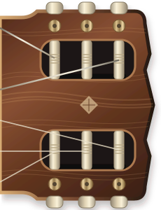

Notación
01 / EXPLORAR
Conoce tu mástil.
Reconecta con las notas. Toca una cuerda y escucha dónde estás.
TU GUITARRA, NOTA A NOTA
El mapa del mástil
Guitarra clásica · nailon & madera

01 / EXPLORAR
Reconecta con las notas. Toca una cuerda y escucha dónde estás.
TU GUITARRA, NOTA A NOTA
